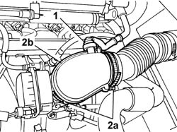

1048A31 RIGID PIPE CONNECTING AIR CLEANER TO INLET MANIFOLD RIGID PIPE R R
- Path
- Procedures > 10 ENGINE > 1048 ENGINE AIR SUPPLY CIRCUIT > 1048A VACUUM AIR CIRCUIT > 1048A31 RIGID PIPE CONNECTING AIR CLEANER TO INLET MANIFOLD RIGID PIPE R R
- Kind
- repair procedure (removal / refitting; the operation number is the code)
- Applies to
- engines: 2.0 16v; all production periods
- Interactive page
- https://sloeber94.github.io/elrnDB-fUlss/en/#/179007004
Applies to: engines: 2.0 16v; all production periods
 Removing
Removing
 Refitting
Refitting1. Disconnect the rapid connector for the oil vapour recovery pipe from the rigid pipe.
2. Act on the retaining bands (2a) and remove the rigid pipe between the air filter and the intake manifold (2b).

Applies to: engines: 2.0 16v; all production periods
Refitting
Removing- Fit the rigid pipe and renew the fastenings.
Topics that link to this page (8)
- 1056B15 THROTTLE BODY INTERGRAL WITH MDS - R R
- 1072B10 INLET MANIFOLD - R + R AND REPLACE SEAL
- 1084A42 ENGINE OIL TEMPERATURE SENDER UNIT - R + R
- 1084B34 CARTRIDGE ENGINE OIL FILTER SUPPORT - R + R
- 1088B20 ENGINE COOLING RADIATOR - R + R
- 1088B26 ENGINE COOLING RADIATOR PROTECTIONS/AIR DUCTS - ARRANGE
- 5510C42 KNOCK SENSOR - R+R
- 5520B10 STARTER MOTOR - R+R